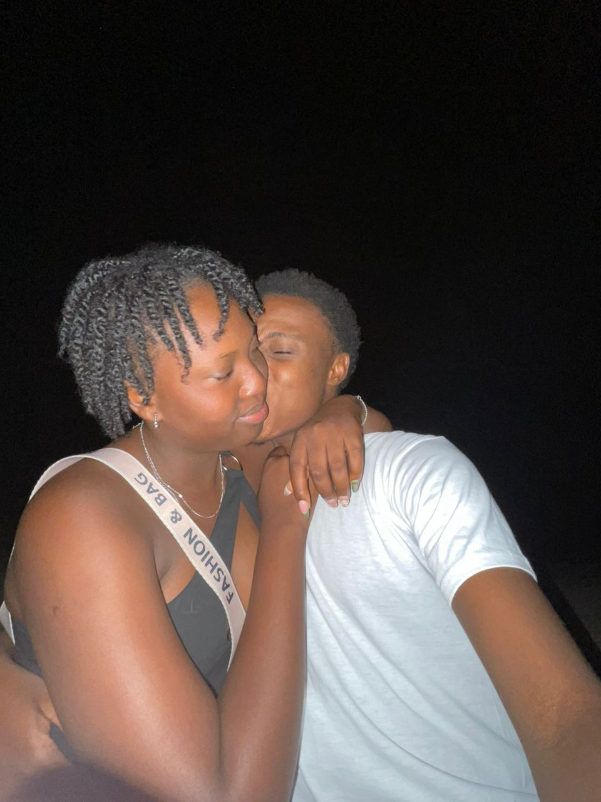
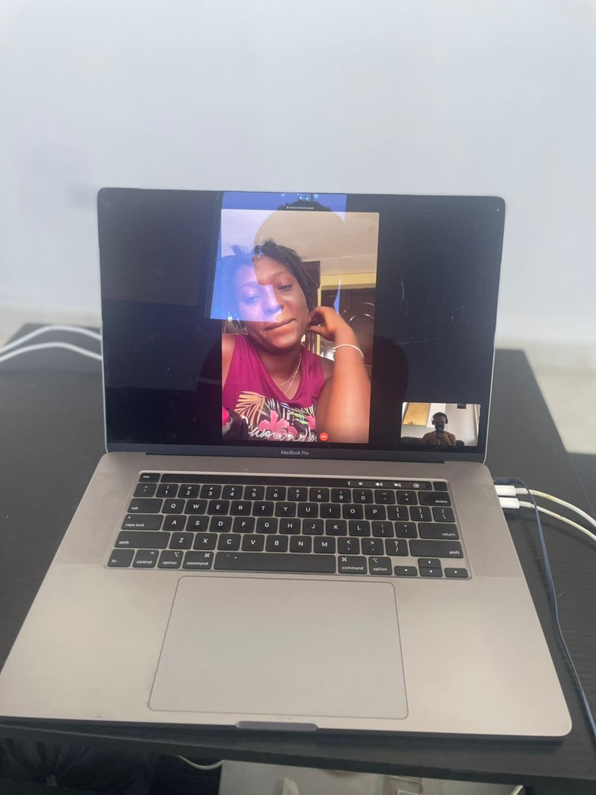
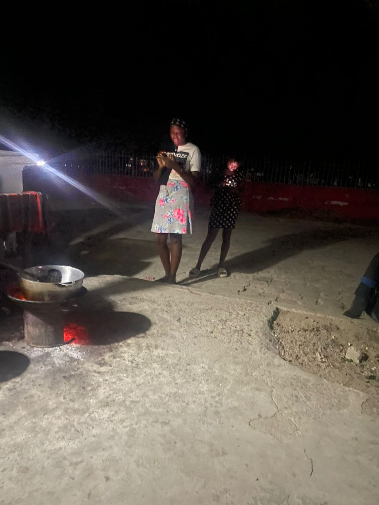
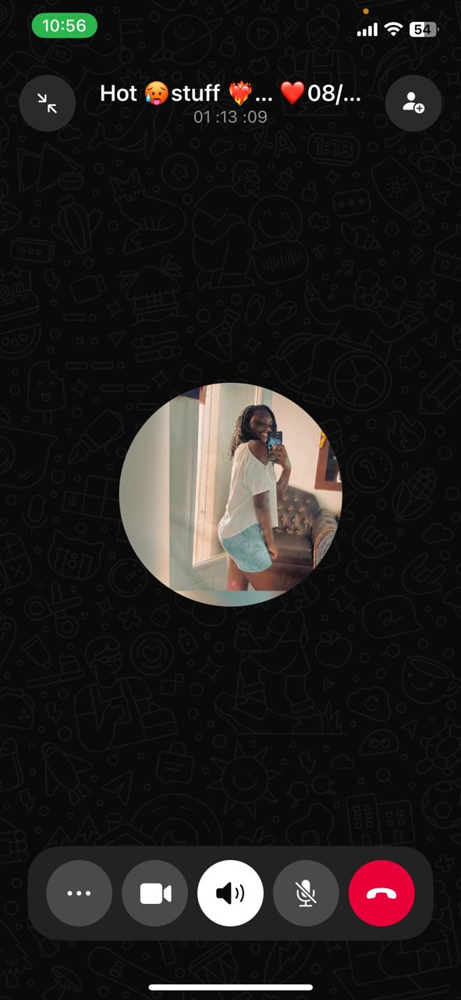
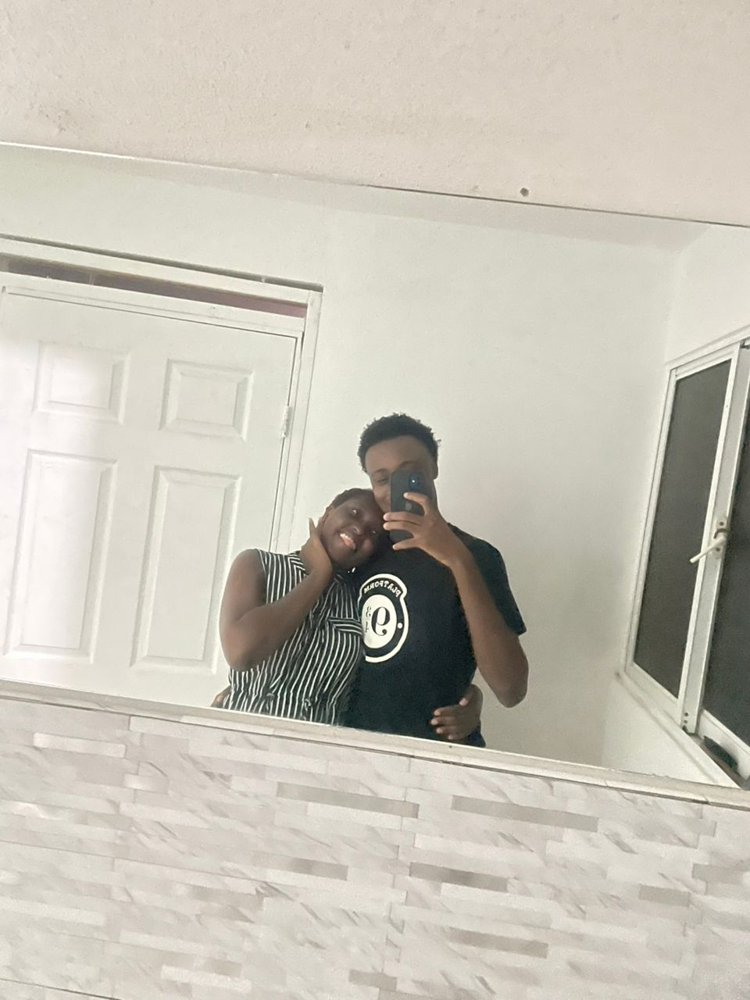
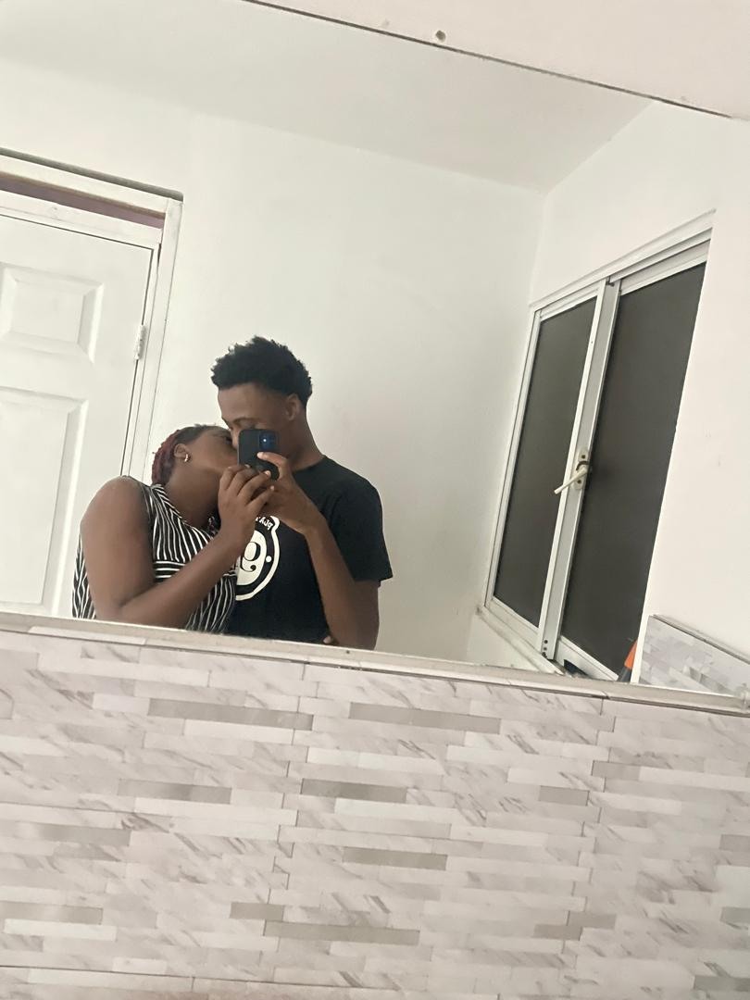
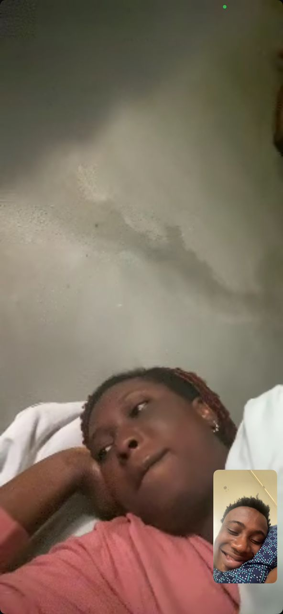
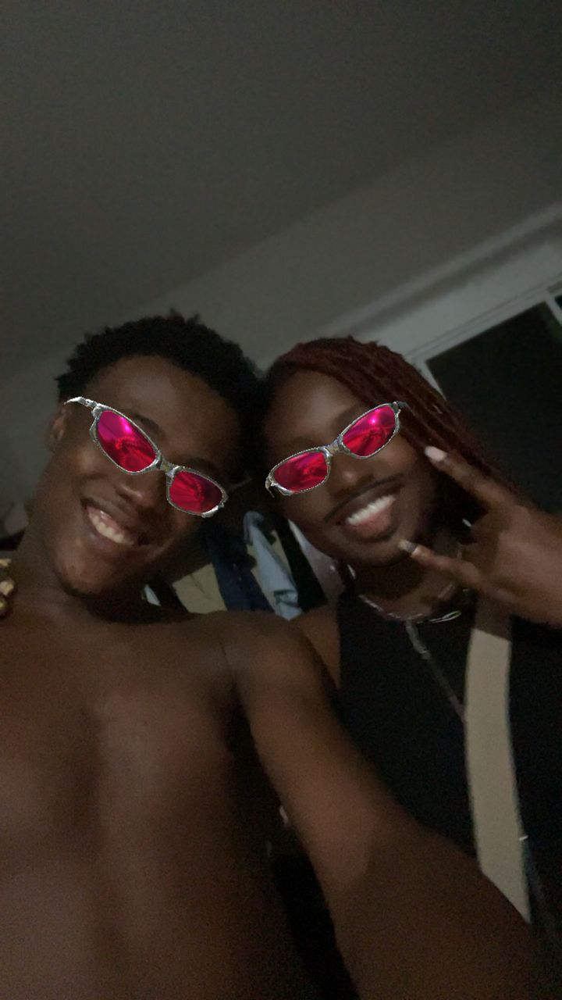
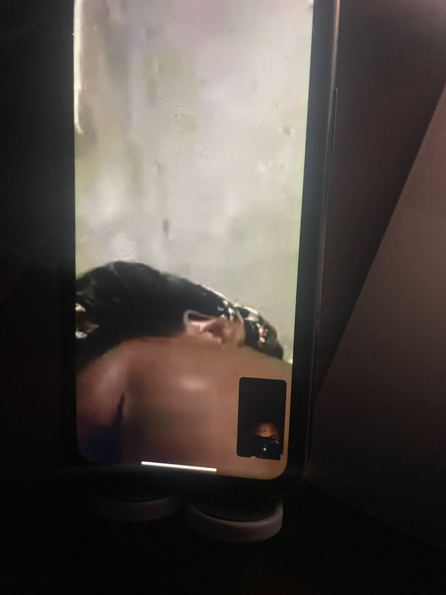

<!DOCTYPE html>
<html lang="fr"></html>
<head>
    <meta charset="UTF-8">
    <meta name="viewport" content="width=device-width, initial-scale=1.0">
    <title>valentine💘</title>
    <link rel="stylesheet" href="style.css">
   
    

    <body>

        <div class="message">
        <h1>Will you be my Valentine ?</h1>
         <div class="button-message">
            <button class="btn" onclick="afficherMessage()">Yes ❤️</button>
            <button class="btn" onclick="refuser()">No 💔</button>
         </div>   


        </div>


        <div class="container" style="display: none;">
            <h1>Joyeuse Saint-Valentin ! 💘</h1>
            <p>Aujourd’hui c’est la Saint-Valentin et je voulais t’écrire quelque chose de vrai. Pas un texte parfait, pas des phrases qu’on voit partout, juste des mots sincères.
                Tu as une place que personne d’autre n’a. Quand quelque chose m’arrive dans la journée, j’ai souvent envie de te l’écrire ou de te le raconter. Quand je pense à mes
                projets, à mon avenir, tu apparaîs naturellement dans mes pensées. Ce n’est pas une obligation. Ce n’est pas une illusion. C’est simplement ce que je ressens.
                Je ne t’aime pas seulement quand tout est léger et facile. Je t’aime aussi dans les moments plus compliqués, quand on doit faire des efforts pour se comprendre, 
                quand il faut ravaler un peu d’orgueil pour protéger ce qu’on construit. Pour moi, aimer quelqu’un ce n’est pas juste partager des rires et des photos. C’est aussi choisir
                de rester, choisir de parler, choisir d’améliorer les choses au lieu de les laisser se casser.
                Je ne suis pas parfait. Je peux être maladroit. Je peux me fermer parfois. Je peux dire les choses de la mauvaise façon ou au mauvais moment. Mais mes sentiments ne sont pas 
                superficiels. Ils sont réels. Tu comptes pour moi d’une manière sérieuse, profonde. Ce n’est pas un jeu, ce n’est pas une habitude, ce n’est pas un simple attachement passager.
                Je veux quelque chose de solide. Quelque chose qui traverse les saisons, les humeurs, les périodes plus calmes et celles plus intenses. Je veux qu’on apprenne à mieux communiquer, 
                à mieux se comprendre, à être deux personnes fortes qui choisissent d’avancer ensemble au lieu de se tirer vers le bas.
                Aujourd’hui, je ne célèbre pas seulement une date. Je célèbre le fait que malgré les hauts et les bas, malgré les doutes, mon cœur te choisit encore. Et ça, pour moi, ça a du poids.


            </p>
            <button class="btn" onclick="afficherSouvenir()">Nos Souvenir Ensemble❤️🥺</button>
            <div id = "souvenir" style="display: none;">
                <div class ="souvenir">
                    
                    
                    
                    
                    
                    
                    
                    
                    
                    

                    <p> Sachez que je t'aime ❤️ beaucooup Mon Amour😭❤️ et j'espère notre relation arrive just qu'au bout de notre vie Manmi🥺❤️</p>
                </div>
            </div>
        
        </div>
        <script src="script.js"></script>
     </body>   